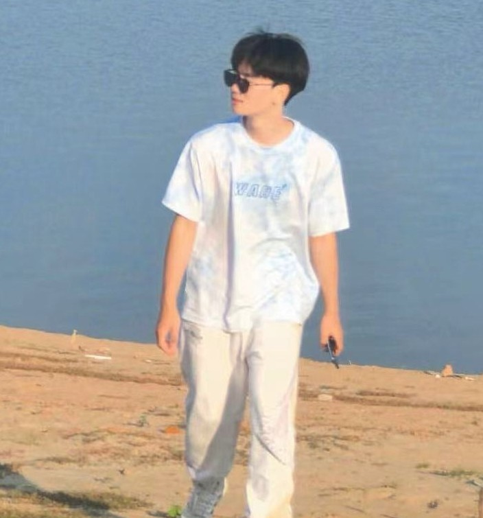

Tsinghua University 清华大学
Expected Sep 2027Incoming M.Eng. student in Computer Technology, Shenzhen International Graduate School (recommended admission)
Advisor: Weijia Li · Research: world models, agents
I am an undergraduate in Spatial Information and Digital Technology at the School of Remote Sensing and Information Engineering, Wuhan University. I will join Tsinghua Shenzhen International Graduate School (SIGS) as a Master's student in Computer Technology in September 2027, advised by Prof. Weijia Li.
My research interests include multimodal generative models, world models, and agents.
I am happy to discuss research and potential collaborations. Please feel free to contact me by email.

Incoming M.Eng. student in Computer Technology, Shenzhen International Graduate School (recommended admission)
Advisor: Weijia Li · Research: world models, agents
Undergraduate, Spatial Information and Digital Technology, School of Remote Sensing and Information Engineering
Advisor: Jiayuan Li · Research: 3D vision, point cloud
Rank: 7/367 (top 1.9%) · CET-6: 554